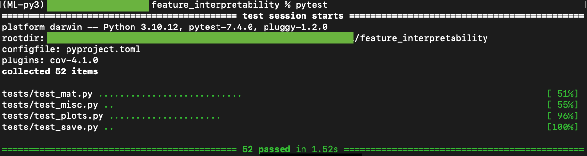
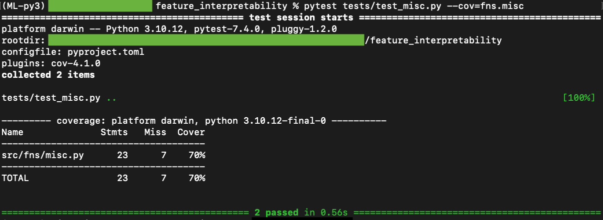
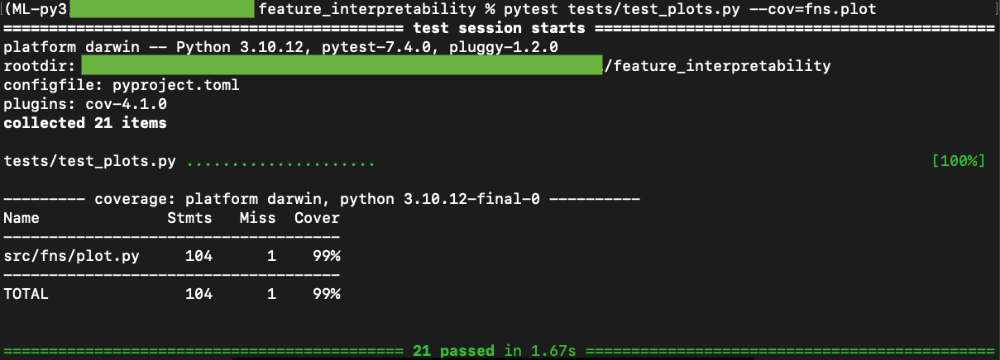
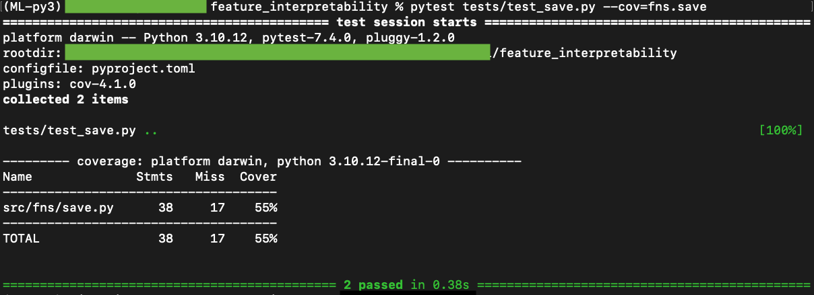

Testing with Pytest
Testing is implemented on the Outer Functions with pytest. Testing is not completed on any functions that require either neural network files or input data files. Hence, testing was not completed on any other submodules of the fns module.
Table of Contents:
Running Tests

Test files are in ./tests. Tests are run from the outermost layer of the feature_interpretability directory, while in an enviroment with pytest installed.
Run
pytestto run all tests.Run
pytest --covto run all tests and generate a coverage report onfns.Run
pytest --cov=fns.submoduleto run tests and generate a coverage report on a specific submodule offns.
Testing on fns.mat
Contains tests for fns.mat functions
- class tests.test_mat.Test_normalize01
tests
fns.mat.normalize01()- test_1D(matrix1D)
tests on a 1D matrix
- test_2D(matrix2D)
tests on a 2D matrix
- test_3D(matrix3D)
tests on a 3D matrix
- class tests.test_mat.Test_normalize_mat
tests
fns.mat.normalize_mat()- test_ft01(matrix3D)
tests norm=’ft01’, normalizing by feature slice
- test_all01(matrix3D)
tests norm=’all01’, normalizing across all dimensions
- test_none(matrix3D)
tests norm=’none’, no normalizing
- test_invalid(matrix3D)
tests invalid norm string raises assertion error
- class tests.test_mat.Test_matrix_padding
tests
fns.mat.matrix_padding()- test_x_too_small(bigmatrix2D)
tests that a too small desired size in x raises an assertion error
- test_y_too_small(bigmatrix2D)
tests that a too small desired size in y raises an assertion error
- test_x_not_symmetric(bigmatrix2D)
tests that a desired size in x that does not allow for symmetric padding rasises an assertion error
- test_y_not_symmetric(bigmatrix2D)
tests that a desired size in y that does not allow for symmetric padding rasises an assertion error
- test_correct_size(bigmatrix2D)
tests that valid desired dimensions return a matrix of the correct size
- class tests.test_mat.Test_matrix_cutting
tests
fns.mat.matrix_cutting()- test_x_too_big(bigmatrix2D)
tests that a too large desired size in x raises an assertion error
- test_y_too_big(bigmatrix2D)
tests that a too large desired size in y raises an assertion error
- test_x_not_symmetric(bigmatrix2D)
tests that a desired size in x that does not allow for symmetric cutting rasises an assertion error
- test_y_not_symmetric(bigmatrix2D)
tests that a desired size in y that does not allow for symmetric cutting rasises an assertion error
- test_correct_size(bigmatrix2D)
tests that valid desired dimensions return a matrix of the correct size
- class tests.test_mat.Test_matrix_scale
tests
fns.mat.matrix_scale()- test_correct_size_smaller(bigmatrix2D)
tests that smaller desired dimensions return a matrix of the correct size
- test_correct_size_biggerer(bigmatrix2D)
tests that bigger desired dimensions return a matrix of the correct size
- class tests.test_mat.Test_concat_avg
tests
fns.mat.concat_avg()- test_invalid_axis(bigmatrix2D)
tests that an invalid axis value raises an assertion error
- test_size_axis0_spacerTrue(bigmatrix2D)
tests that the correct size is returned for axis=0 and spacer=True
- test_size_axis0_spacerFalse(bigmatrix2D)
tests that the correct size is returned for axis=0 and spacer=False
- test_size_axis1_spacerTrue(bigmatrix2D)
tests that the correct size is returned for axis=1 and spacer=True
- test_size_axis1_spacerFalse(bigmatrix2D)
tests that the correct size is returned for axis=1 and spacer=False
- class tests.test_mat.Test_scalar_2Dcorr
tests
fns.mat.scalar_2Dcorr()- test_identical_corr()
tests that the correlation between two identical matricies is one
- class tests.test_mat.Test_get_statsig
tests
fns.mat.get_statsig()- test_high_pvals(bigmatrix2D)
tests that values are removed when p-values are higher than the threshold
- test_low_pvals(bigmatrix2D)
tests that values are kept when p-values are lower than the threshold
Testing on fns.misc

Contains tests for fns.misc functions
- class tests.test_misc.Test_search_list
tests
fns.misc.search_list()- test_return_empty(testlist)
tests that when query is not in any elements of the list, the function returns an empty set
- test_return_all(testlist)
tests that when query is in all elements of the list, the function returns the original list
Testing on fns.plot

Contains tests for fns.plot functions
- class tests.test_plots.Test_split_ticks
tests
fns.plot.split_ticks()- test_runs_ZMinorTicks()
tests that code runs to completion
- class tests.test_plots.Test_custom_colormap
tests
fns.plot.custom_colormap()- test_invalid_color1()
tests that assertion error is raised when color1 is invalid
- test_invalid_color2()
tests that assertion error is raised when color2 is invalid
- test_invalid_alpha1()
tests that assertion error is raised when alpha1 is invalid
- test_invalid_alpha2()
tests that assertion error is raised when alpha2 is invalid
- test_registed_my_cmap()
tests that the function registers the ‘my_cmap’ colormap
- test_registed_new_cmap()
tests that the function registers the ‘new_cmap’ colormap
- class tests.test_plots.Test_feature_plot
tests
fns.plot.feature_plot()- test_invalid_resize(bigmatrix, smallmatrix)
tests that an assertion error is raised when an invalid resize option is passed
- test_invalid_cmap(bigmatrix, smallmatrix)
tests that an assertion error is raised when an invalid c_map option is passed
- test_feature_larger_than_field(bigmatrix, smallmatrix)
tests that an assertion error is raised when the feature is larger than the field
- test_fail_resize_none(bigmatrix, smallmatrix)
tests that an assertion error is raised when resize=’None’ and feature and field do not have identical dimensions
- test_runs_resize_pad(bigmatrix, smallmatrix)
tests that code runs to completion with resize=’pad’
- test_runs_resize_cut(bigmatrix, smallmatrix)
tests that code runs to completion with resize=’cut’
- test_runs_resize_scale(bigmatrix, smallmatrix)
tests that code runs to completion with resize=’scale’
- test_runs_resize_none(bigmatrix)
tests that code runs to completion with resize=’None’
- test_runs_RMinorTicks(bigmatrix, smallmatrix)
tests that code runs to completion with RMinorTicks=True
- test_runs_ZMinorTicks(bigmatrix, smallmatrix)
tests that code runs to completion with RMinorTicks=True
- class tests.test_plots.Test_heatmap_plot
tests
fns.plot.heatmap_plot()- test_runs_upclim05()
tests that code runs to completion when upper color limit is 0.5
- test_runs_upclim10()
tests that code runs to completion when upper color limit is 1.0
- test_runs_lowclim_neg()
tests that code runs to completion when lower color limit is negative
- test_runs_grid_true()
tests that code runs to completion when grid=True
Testing on fns.save

Contains tests for fns.save functions
- class tests.test_save.Test_features2npz
tests
fns.save.features2npz()- test_runs(tensor)
tests that code runs to completion
- class tests.test_save.Test_fields2npz
tests
fns.save.fields2npz()- test_runs(tensor)
tests that code runs to completion